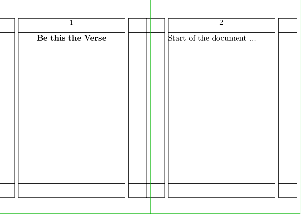
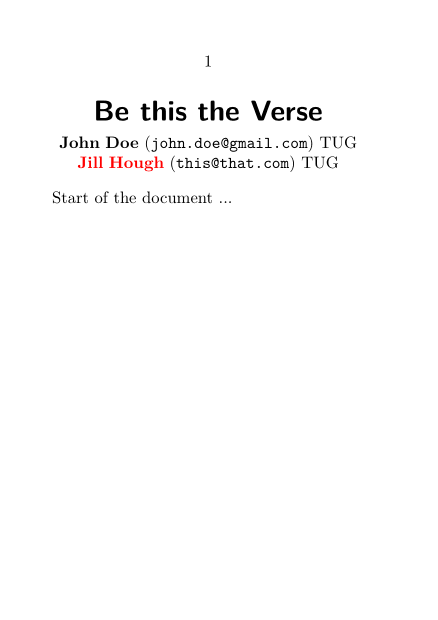

Contents
Summary
The environment
\startdocument ... \stopdocument
adds option processing to
\starttext
.
Settings
| \startdocument[...][...=...,...] ... \stopdocument | |
| [...] | name |
| ...=...,... | inherits from \setupdocument |
Description
Sometimes it makes sense to have options available at the time of
\starttext
, for example to typeset a title page.
\startdocument
allows you to do this either directly by passing arbitrary keys and values to the command itself, or via
\setupdocument
.
\startdocument by default makes use of two setups: document:start and document:stop.
You can use document:start to construct a title page. You can fetch the passed values by using the \documentvariable command.
Examples
Example 1
-
% \starttext \stoptext %% needed to fool the wiki \setuppapersize[A8][A7,landscape] \setuparranging[2SIDE] \showframe \startsetups document:start \startalignment[middle] \bold{\documentvariable{title}} \stopalignment \page \stopsetups \startdocument[title={Be this the Verse}] Start of the document ... \stopdocument
- 
Elaborate example
-
\setuppapersize[A7] \definenamespace [documentauthor] % name of internal variables [type=module, name=author, command=yes, % Create \defineauthor style=yes, % Create \useauthorstyleandcolor setup=list, % Create \setupauthor parent=documentauthor, ] \define[1]\useauthor {\edef\currentauthor{#1}% {\useauthorstyleandcolor{style}{color} \authorparameter{name}}% \space (\mono{\authorparameter{email}})% \doifsomething{\authorparameter{affiliation}}{% \space\authorparameter{affiliation}} \endgraf } \startsetups document:start \startalignment[middle] {\ssbfc\setupinterlinespace \documentvariable{title} \endgraf} \blank[medium] \processcommacommand[\documentvariable{author}]\useauthor \blank[big] \stopalignment \stopsetups \startsetups document:stop % If you want to place something at the end of a document \stopsetups \setupauthor[style=bold] \defineauthor[univ1][affiliation={TUG}] % Inherit keys across authors. \defineauthor [john] [univ1] [name={John Doe}, email={john.doe@gmail.com}] \defineauthor [jill] [univ1] [name={Jill Hough}, email={this@that.com}, color=red] \setupdocument [title={Be this the Verse}, author={john,jill}] \starttext % for the wiki \startdocument Start of the document ... \stopdocument \stoptext % for the wiki
- 
This example is based on Abstracting an author list on Stack Exchange.
Notes
See also
- \definedocument
- \setupdocument
- file-job.mkvi
- \starttext for a simpler way to start a document
- Input and compilation/Project and file management for a way to group similar documents
- Input and compilation/Setups for an explanation of \startsetups